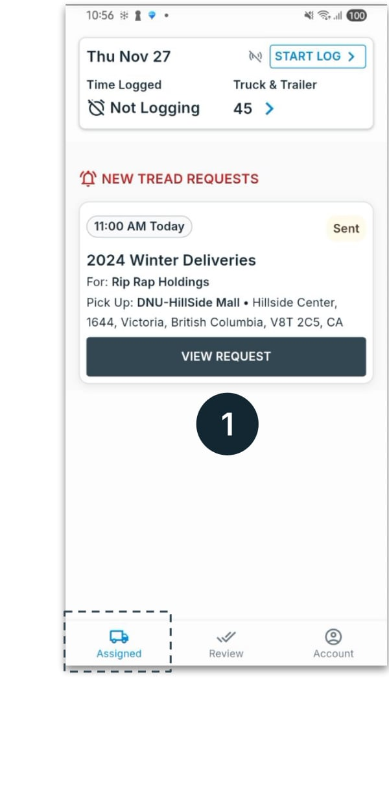
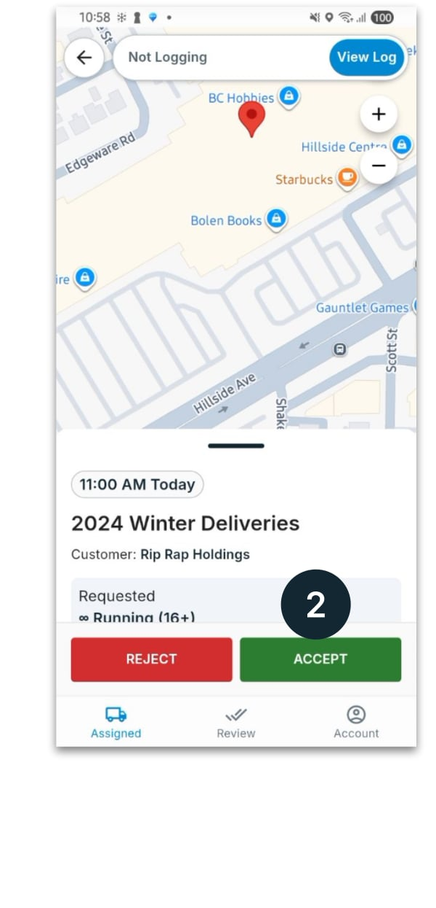
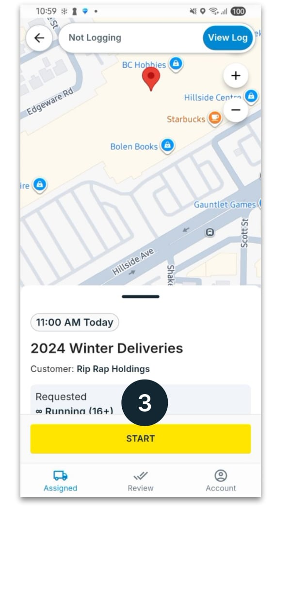

Dispatching, end to end
Dispatching is the daily act of getting work onto the right driver's phone — from the web dashboard or the mobile app. Your drivers receive, accept, and start jobs on their phones.
New to Tread? Set up your trucks, drivers, and users first (see the Vendor Guide) — then come back here to dispatch.
Project, Order, Job
A Project is the container; an Order is the daily slice you dispatch; you assign and send the jobs inside an order.
Your command center for the day
The Dispatch view shows each order's status, truck count, and the per-job rows you act on. Each job moves along this status flow:

Assign to your driver — or a vendor
In the Assign panel you toggle between Driver and Vendor — that choice is the dispatch mode.
Vendor (Hot) dispatch needs an accepted Vendor connection, and a Direct Owner-Operator must be shared to you — otherwise the job won't send or the driver won't appear. Check Settings → Vendors and Settings → Drivers.
Pre-flight checklist
Three things in place before you send your first job of the day.
- 1Work exists: a project and at least one order for the day.
- 2Trucks & drivers are set up: drivers added (and invited so they have the app), trucks created, and default trucks paired.
- 3Connections confirmed (if using vendors): the Vendor connection is accepted and any Owner-Operator drivers are shared to you.
Assign, configure, send, monitor
From the web dashboard — full control over every dispatch.
Dispatch from the web
The numbered markers on each screenshot correspond to the steps.
Assign a driver (or a vendor)
- 1Assign — opens the Driver / Vendor picker on the job row.
- 2Driver — assign one of your drivers (Regular) or an Owner-Operator (Direct). Search by name, phone, or truck number.
- 3Vendor — hand the job to a hauling company that sub-dispatches it (Hot).

Bulk assign to a vendor (optional)
- 1Click the Bulk Assign (persons) icon at the top right.
- 2Use + to set the number of trucks for the vendor.
- 3Click Assign All to assign every selected job at once.

Configure the job details
Hover a row and click Edit to open Edit Job. Confirm the pickup and drop-off sites, the truck and trailer, the start date and time, and the rates. Click Submit to save.
Send the jobs
- 1Click Send on a single row to dispatch that driver.
- 2Or Send All Jobs at the top to send every pending assignment at once. Drivers are notified instantly.

“Send All Jobs” dispatches every job with an assignment. Double-check the list before clicking.
Monitor the jobs
Follow each job's Status; advance it manually with the down arrow, and follow trucks on the Live Map.

Dispatch from your phone
The same dispatch — useful when you're away from your desk.
Open the Dispatch tab
Tap, assign, and send — all from the app.
Open the order & pick a driver
- 1Tap the order's truck count to expand it, then + Assign.
- 2Search a driver by name or truck number and tap to select.
- 3Tap Send — instant push notification; the driver accepts and starts from their phone.


What the driver sees
Once you send, the driver gets the job on their phone.
View → Accept → Start
Three taps from offer to starting the run.
View the request
New offers appear in the driver's Assigned tab under New Tread Requests. The driver taps View Request.

Accept the job
The driver reviews pickup, drop-off, and material, then taps Accept (or Decline). Until they respond you'll see Pending on your board.

Start the job
The driver taps Start. Their location appears on your Live Map and the status starts moving.

Tips & common pitfalls
What helps most — and what trips people up.
Use the Driver tab for your own drivers and Vendor for haulers who sub-dispatch. Picking the wrong one is the most common reason a driver never receives a load.
- Driver didn't get the load? If status is Assigned (not Sent), you still need to hit Send. If it's sent but the driver shows Pending, they haven't accepted yet, or lack the app / location permissions.
- Vendor (Hot) jobs show the driver's name on your board only after the vendor's dispatcher assigns one of their drivers.
- Set a default truck on each driver so it pre-fills on every assignment — fewer clicks, fewer mistakes.
Keep the Dispatch Guide handy
Download the PDF to share with your team or reference during training.
Download PDF — EnglishWe're here when you need us.
Pick whichever is fastest for you.
In-app chat
Tap the chat icon in the web app, or open Account on mobile.
Help Center
Search step-by-step articles at docs.tread.ai.